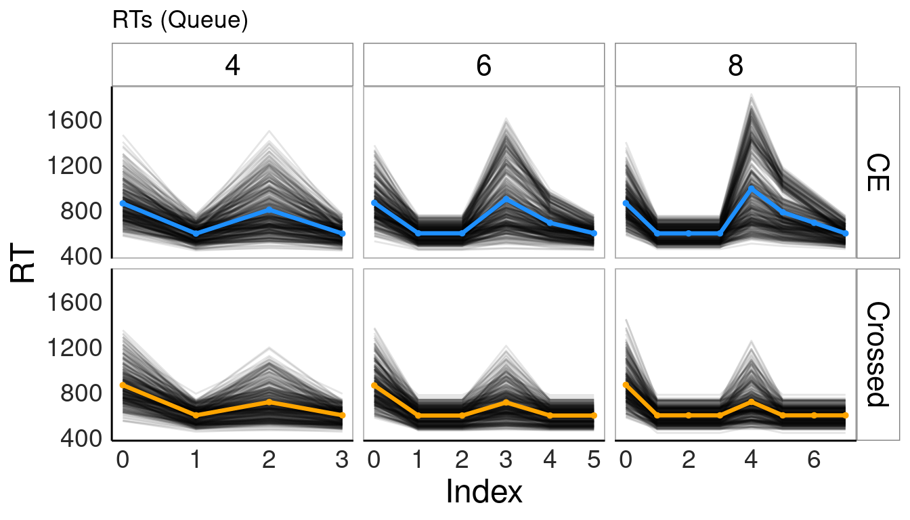
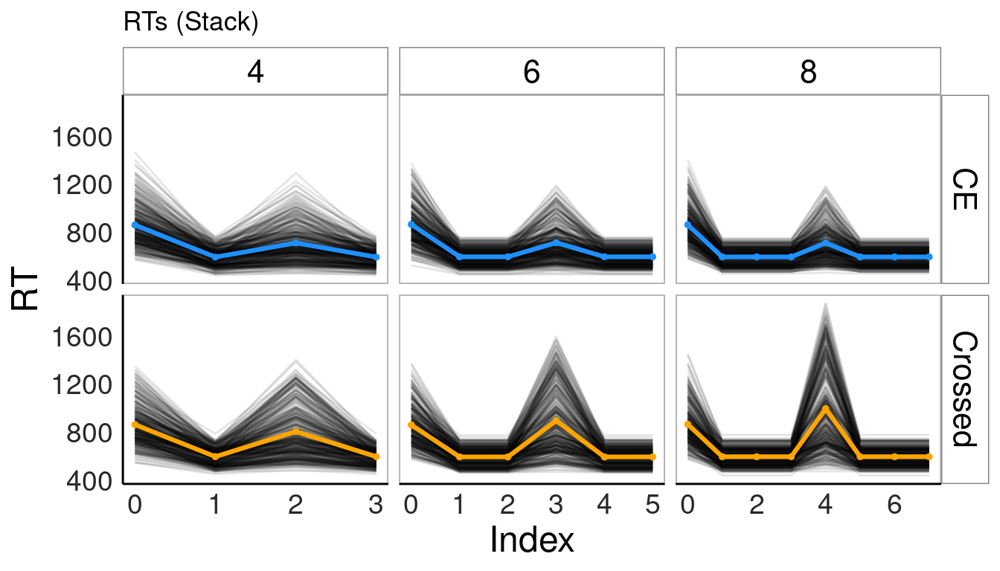
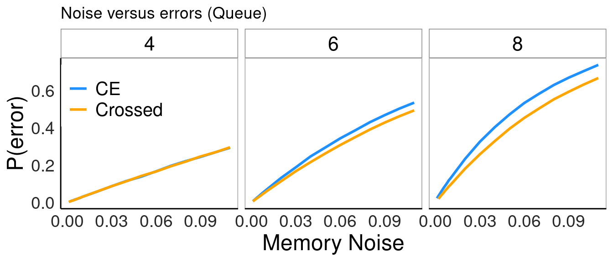
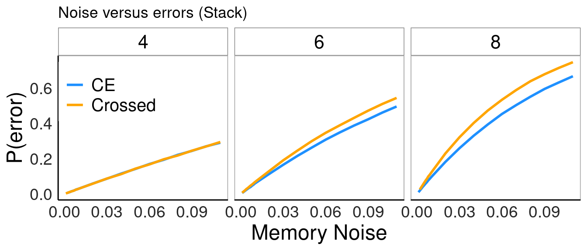
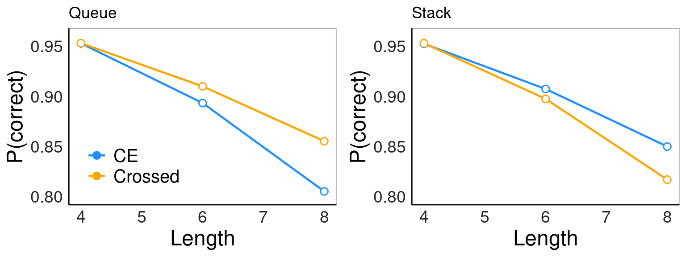

I will first briefly describe how the model works. The model assumes that there is some memory architecture (queues or stacks), which can be used to store and retrieve items. I assume that people can push or pop items from memory in accordance with the rules of the specified architecture. Each operation (push/pop) takes some amount of time and introduces noise — that is, the more operations you have to perform, the more likely you are to retrieve something incorrectly. I assume that people learn a program to generate either center-embedded sequences or crossed-serial sequences (e.g., a program that says “first pick things of type A, then match them in the same/reverse order with things of type B”), which gets “compiled” into a set of choices about what items to pick and push/pop operations from memory to aid those choices. The exact series of push/pop operations needed to generate center-embedded versus crossed-serial sequences will depend on whether the memory architecture is a stack or a queue.
As in the previous model, I also assume that people can learn over time. They may use an incorrect strategy at first but eventually learn the correct one after getting feedback. Instead of a whole set of possible different strategies, I am here just assuming that there is one alternative strategy that people might be using, which is just picking items of type A and then picking items of type B, without regard to order. While there are a range of alternative strategies people may use, this one is both broad (is a super-set of sub-strategies) and intuitively plausible.
Below, I run through some predictions about how reaction times and error rates should vary depending on sequence length and condition. Note that I have not described how the model works in full here, so it may be that you won’t fully understand some of the plots until we discuss. On the other tab on this site, which you can click on above, you can see how the queue and stack model actually fit the human data.
The first thing we can look at is simulated mean reaction times under the queue and stack models, given a range of possible parameters. First, the queue model:

Now, the stack model:

Note that the main difference is in the center-embedded condition: the queue model predicts 1) that people will take increasingly long to respond to items in the second half of the list for longer sequences, and 2) that their RTs will diminish with each subsequent choice.
Next, we can look at what each model predicts about how memory noise affects error rates. First the queue model:

And the stack model:

We can more directly compare their predictions about how sequence length should affect accuracy in each condition by fixing memory noise at some value (I chose 0.02). Queues’ predicted accuracy across sequence lengths are on the left and stacks’ predicted accuracies over lengths are on the right. Both obviously predict that as sequences get longer, accuracy will decrease. But they make opposite predictions for which condition will be more difficult as sequences get longer. The queue model predicts that people will have a harder time accurately generating center-embedded sequences relative to crossed-serial sequences as sequences get longer; the stack model predicts the opposite.
